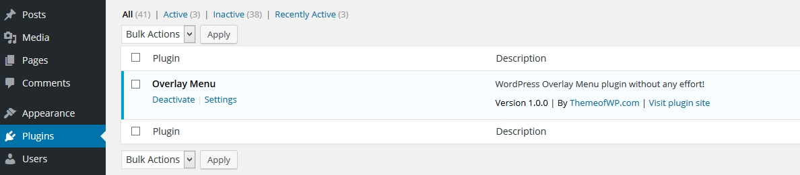
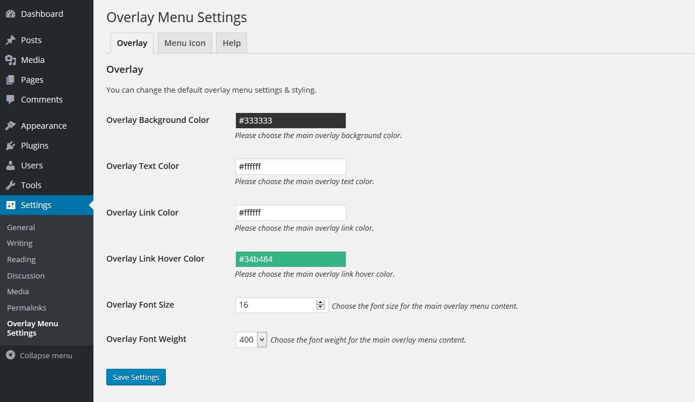
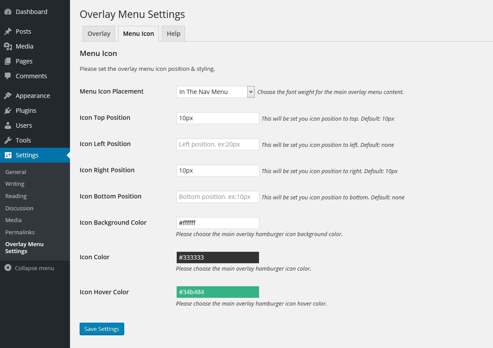
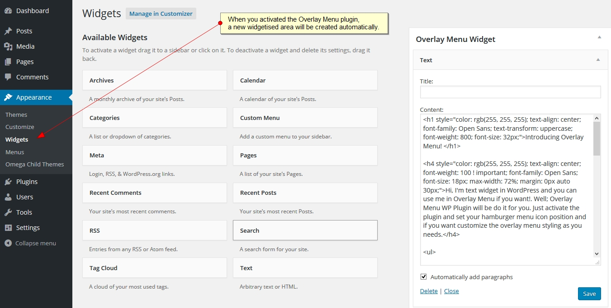
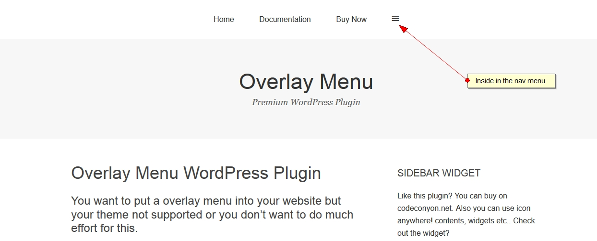
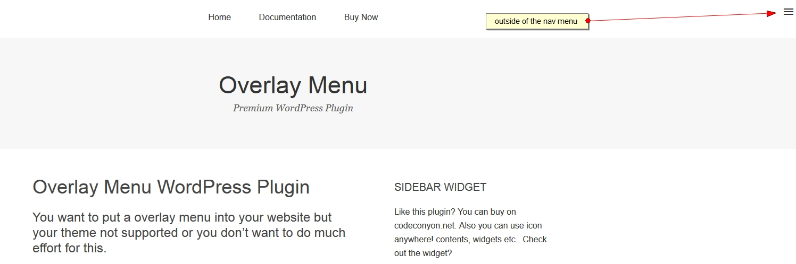

Overview
Thanks for purchased "Overlay Menu WordPress Plugin". You will find all about plugin informations in this documentation. If you need extended help or find any bug please don't hesitate to contact us 24/7 or you can use our Support Forums. If you like our WordPress themes / plugins please drop your comments and rate our items.
You can easily create and use Overlay Menu menu with "Overlay Menu WordPress Plugin" in your website. You can set the icon position styling and other things in the plugin settings page. Also you can use any content in the comes with Overlay Menu widget.
1. Installation
BThe first thing you need to do when you want to install plugin is to login to your site admin panel or via ftp.
Once there, go to Appearance -> Plugins. section and install you purchased and downloaded Overlay Menu WordPress Plugin via plugin installer.

Then you should activate the Overlay Menu
2. Usage
When activated the plugin you'll see the plugin settings under the Settings > Overlay Menu Settings menu left side wp-admin dashboard. In the settings section first tab will be show you overlay popup screen settings and the second tab will be display menu icon settings.
Default variables defined but you can customize the settings as your needs. Then save the settings for the apply all those options to your overlay menu.
Plugin will be create a new widgetized areas for you for the flexible usage. You can find the widget area under the Appearance > Widgets section and you can use any content in this widget. This content will be appears in the overlay menu.
Also you can use menu icon in the main navigation.

Also you can use outside of the main navigation.
6. Support & Extended Things
Thanks for purchased theme / plugin but please remember you have purchased a very affordable theme / plugin and you have not paid for a full-time web design agency. Usually we will help with small tweaks, but these requests will be put on a lower priority due to their nature.
Support for my items includes:
- Responding to questions or problems regarding the item and its features
- Fixing bugs and reported issues
- Providing updates to ensure compatibility with new software versions
Item support does not include:
- Customization and installation services
- Support for third party software and plug-ins/themes
Before seeking support, please...
- Make sure your question is a valid item Issue and not a customization request.
- Make sure you have read through the documentation and any related video guides before asking support on how to accomplish a task.
- Make sure to double check the item FAQs.
- If you have customized your item and now have an issue, back-track to make sure you didn't make a mistake. If you have made changes and can't find the issue, please provide us with your changelog.
- Almost 80% of the time we find that the solution to people's issues can be solved with a simple "Google Search". You might want to try that before seeking support. You might be able to fix the issue yourself much quicker than we can respond to your request.
- Make sure to state the name of the item you are having issues with when requesting support via our Support Forums.